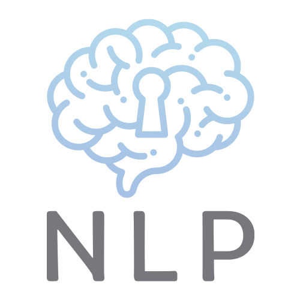

C++
Proficient in using C++ for algorithm design, data structures, and performance-critical software development. Experienced in developing complex systems with a deep understanding of object-oriented programming and memory management principles.
Hello! My name is Yousef Habeeb. I'm an ambitious and dedicated Computer Science student at the University of Illinois at Chicago (UIC), with a profound passion for technology. My journey in the tech realm is powered by a dual interest in software development and cybersecurity. With a robust foundation in programming languages including C/C++, Python, Java, Dart, and more, I've sharpened my expertise through diverse coursework and significant projects. My experiences range from improving the WYA app's user experience and functionality as a Software Engineering Intern using JavaScript, HTML, CSS, and Node.js, to crafting a secure cryptocurrency system with a focus on blockchain transactions in Java. These undertakings highlight my ability to transform intricate theoretical knowledge into tangible, effective solutions, emphasizing my enthusiasm for addressing the complex challenges in cybersecurity and software development.
Proficient in using C++ for algorithm design, data structures, and performance-critical software development. Experienced in developing complex systems with a deep understanding of object-oriented programming and memory management principles.

Proficient in Python with skills ranging from file compression to data management and scripting. Experienced in leveraging libraries like pandas, NumPy, and Matplotlib for efficient data manipulation, analysis, and visualization. Capable of developing automation scripts to streamline workflows and enhance productivity.
Experienced in Java for cross-platform applications and Android development. Proficient in applying Concurrent programming practices as well as object-oriented design principles and patterns, creating robust and scalable applications with Spring Framework and JavaFX.
Enhanced WYA app's user experience, participated in Agile project management, and contributed to frontend and backend development.
Led Python lab sessions and Arduino workshops, crafted course content, and evaluated student assignments at UIC.

Improved NLP model accuracy, developed Python automation scripts, and enhanced dataset evaluation processes at UIC.
I've developed a program in C++ that simulates the functionality of a search engine, allowing users to locate pages containing specific words. With additional features such as a search history, the program operates using maps of strings and sets of strings. Sets store URLs, while strings handle user inputs, enhancing the search experience.
This program is my take on the classic game "Hunt the Wumpus." I've designed it to let players explore a cave system, face off against the Wumpus, and avoid dangers like bottomless pits and super-bats. Built using C, I've implemented dynamic memory allocation to handle the cave layout and player interactions, along with randomization for positioning the player, Wumpus, hazards, and arrows.
I've created a JavaFX chat application for multiple clients and a central server. I implemented the client-server communication logic, handling message transmission and reception. Additionally, I created user interfaces for both the server and client sides, enabling users to send and receive messages seamlessly. Overall, I've crafted a functional and user-friendly chat application for real-time communication.